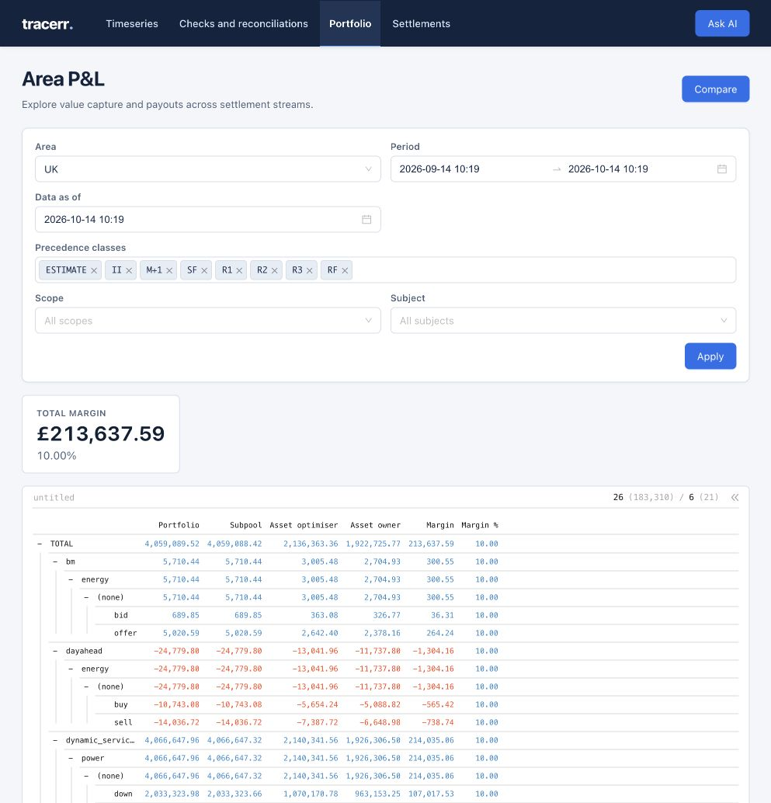

Settlement without the scramble. Answers without the wait.
Settlement depends on data moving between suppliers, the TSO, grid operators and asset owners. One broken handoff can stall work across the chain. Tracerr connects revenue estimates, exchanged data and final settlement in one transparent platform, so every stakeholder can inspect the evidence, resolve questions and keep work moving.
Know what has been captured before the settlement run arrives.
Validate inputs and reconcile differences in a shared context.
Follow revisions back to their source and calculation.
One missing file can become everyone’s delay.
Late inputs, mismatched versions and unclear corrections send teams back through inboxes and spreadsheets. Tracerr shows what was exchanged, who owns it and how it changed, with validation and reconciliation in the same workflow.
One revenue story, from estimate to settled outcome.
Market revenue estimates and actual settlements belong in the same auditable history. Tracerr helps every stakeholder see the difference, trace its cause and resolve questions without repeating the investigation.
- Estimate revenue captured across market activity.
- Validate inputs and reconcile each later settlement run.
- Trace differences and carry customer questions to resolution.

Keep the whole settlement chain moving.
Tracerr gives each handoff a clear owner, checks data as it arrives and keeps corrections and questions tied to the evidence. Teams can work from one shared record instead of reconstructing what happened at every step.
Where Tracerr goes to work.
For optimisers, reliable revenue and cost estimates depend on rules, account structures and fees that are hard to navigate alone.
Flexibility settlement
The BSC is hard to navigate across VLPs, VTPs, suppliers and asset owners. Tracerr makes each data flow and check visible, so optimisers can model expected revenues and understand later settlement.
Flexibility settlement
Asset-level data must roll up into BRP and BSP accounts. Tracerr preserves the links between assets, accounts and settlement outcomes, giving optimisers a checkable view of expected revenues.
Grid fee modeling
Optimisers need to know every grid fee that applies to an asset. Tracerr brings those fees into one model, with visible assumptions and a trace from expected to actual charges.